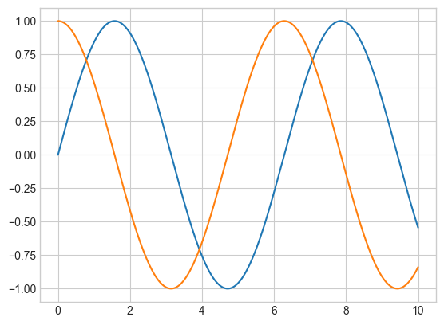
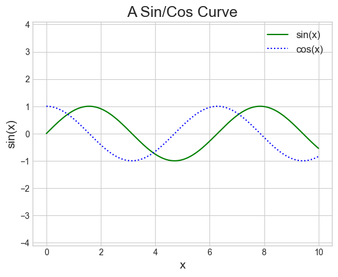
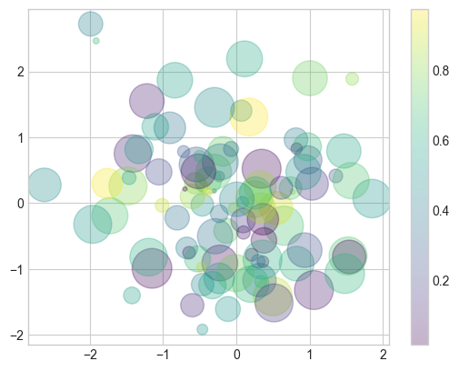

Matplotlib is a multiplatform data visualization library built on NumPyarrays and designed to work with the broader SciPy stack. Matplotlib supports numerous backends and output types, which means we can count on it to work regardless of the operating system we are using or the output format we desire. It has led to a large user base, which in turn has resulted in an active developer base and Matplotlib’s powerful tools and ubiquity within the scientific Python world. Let’s install the package first:
package_name ="matplotlib"try:__import__(package_name)print(f"{package_name} is already installed.")exceptImportError:print(f"{package_name} not found. Installing...")%pip install {package_name}
matplotlib is already installed.
Creating interactive plots within a Jupyter notebook can be accomplished using the %matplotlib command. Additionally, we have the option to embed graphics directly in the notebook using inline option:
Just as we use the np shorthand for NumPy, we will use some standard shorthands for Matplotlib imports:
import matplotlib as mplimport matplotlib.pyplot as pltimport numpy as npplt.style.use('seaborn-v0_8-whitegrid')
We can choose the style we would like from the here.
10.2 Two interfaces for the matplotlib
A feature of Matplotlib that may cause confusion is its dual interfaces: a user-friendly functional-style state-based interface and a more powerful object-oriented interface. We’ll briefly outline the differences between the two here. Firstly, we create the data we would like to plot. The simplest method, plot() accept two arrays (x and y) as inputs. It will plot y versus x as lines and/or markers.
x = np.linspace(-np.pi, np.pi, 256)C, S = np.cos(x), np.sin(x)
x is now a array with 256 values ranging from \(-\pi\) to \(\pi\) (included). C is the cosine (256 values) and S is the sine (256 values).
10.2.1 Functional Interface
Matplotlib was initially developed as a Python alternative for MATLAB users, and many aspects of its syntax reflect this origin. The MATLAB-style tools can be found in the pyplot (plt) interface. For instance, the following code might appear quite familiar to MATLAB users:
# 1. create a plot figureplt.figure() # 2. create the first of two panels and set current axisplt.subplot(2, 1, 1) # (rows, columns, panel number)plt.plot(x, S)# 3. create the second panel and set current axisplt.subplot(2, 1, 2)plt.plot(x, C)plt.savefig("test.jpg");# Note that the semicolon at the end of the last line is intentional: it suppresses the textual# representation of the plot from the output
It’s crucial to understand that this interface is stateful: it maintains information about the “current” figure and axes, which serve as the targets for all plt commands. We can obtain a reference to these by using the plt.gcf() (get current figure) and plt.gca() (get current axes) functions.
plt.gca();
Although the stateful interface is quick and convenient for basic plots, it can lead to difficulties. For instance, after creating the second panel, how can we return to the first one and add something? While this can be achieved using the MATLAB-style interface, it may be somewhat awkward. Thankfully, there is a more efficient solution.
10.2.2 Object-oriented interface
For more complex scenarios or when greater control over the figure is desired, the object-oriented interface comes in handy. Instead of relying on the concept of an “active” figure or axes, the object-oriented interface treats plotting functions as methods of explicit Figure and Axes objects.
# 1. First create a grid of plots# ax will be an array of two Axes objectsfig, ax = plt.subplots(2)# 2. Call plot() method on the appropriate objectax[0].plot(x, S)ax[1].plot(x, C);
For basic plots, the choice between the two styles is mainly a matter of personal preference. However, as plots become more intricate, the object-oriented approach may be essential.
fig.savefig("test.pdf")
10.3 Simple plots
10.3.1 Simple line plots
To create a 2D line plot, follow these general steps:
Call the plt.figure() to create a new figure. (optional for %matplotlib inline)
Generate a sequence of \(x\) values usually using linspace().
Generate a sequence of \(y\) values usually by substitute the x values into a function.
Input plt.plot(x, y, [format], **kwargs) where [format] is an (optional) format string, and **kwargs are (optional) keyword arguments specifying the line properties of the plot.
Utilize plt functions to enhance the figure with features such as a title, legend, grid lines, etc.
Input plt.show() to display the resulting figure (this step is optional in a Jupyter notebook).
Let’s begin with a basic example where we try plotting the parabola using 5 points:
x = [-2,-1,0,1,2]y = [4,1,0,1,4]plt.plot(x,y);
Key aspects to pay attention to are:
The sequences x and y determine the coordinates of the points in the plot.
The plot’s line is formed by connecting these points with straight lines.
The second observation suggests that if we aim to display a smooth curve, we need to plot numerous points; otherwise, the plot will not appear smooth. Let’s attempt this again, using the NumPy function np.linspace() to create 200 points:
x = np.linspace(-2,2,200)y = x**2plt.plot(x,y);
Looks much better!
Let’s try another example with a simple sinusoid:
x = np.linspace(0, 10, 1000)plt.plot(x, np.sin(x));# let the figure and axes be created for us in the background
If we want to create a single figure with multiple lines, we can simply call the plot() function multiple times:
plt.plot(x, np.sin(x))plt.plot(x, np.cos(x));

10.3.1.1 Adjusting the plot: Line colors, styles and widths
One of the initial modifications you might want to make to a plot is adjusting the line colors and styles. The plt.plot() function accepts additional arguments that can be employed to define these aspects. To change the color, you can use the color keyword, which takes a string argument representing a wide range of possible colors.
plt.plot(x, np.cos(x -0), color='blue') # specify color by nameplt.plot(x, np.cos(x -1), color='g') # short color code (rgbcmyk)plt.plot(x, np.cos(x -2), color='0.75') # grayscale between 0 and 1plt.plot(x, np.cos(x -4), color=(1.0,0.2,0.3));# RGB tuple, values 0 to 1
Similarly, the line style can be adjusted using the linestyle keyword:
plt.plot(x, x -0, linestyle='-') # solidplt.plot(x, x -1, linestyle='--') # dashedplt.plot(x, x -2, linestyle='-.') # dashdotplt.plot(x, x -3, linestyle=':') # dottedplt.plot(x, x -4, ':k');# dotted black # You can save some keystrokes by combining these linestyle and color codes into a single non-keyword argument
Finally, you can also adjust the width using linewidth keyword:
Matplotlib generally provides suitable default axes limits for your plot, but in certain cases, having more control can be advantageous. The simplest method to fine-tune the limits is by utilizing the plt.xlim() and plt.ylim() functions:
Let’s take a quick look at labeling plots. Titles and axis labels are the most basic types of labels — there are methods available to set them quickly. Moreover, when multiple lines appear within a single set of axes, a plot legend can be helpful in labeling each line type. Once again, Matplotlib has a built-in method for swiftly creating such a legend, achieved through the plt.legend() method:
plt.plot(x, np.sin(x), '-g', label='sin(x)') # solid green lineplt.plot(x, np.cos(x), ':b', label='cos(x)') # dotted blue lineplt.title("A Sin/Cos Curve", fontsize=18) # we can also specify the font sizeplt.xlabel("x", fontsize=14)plt.ylabel("sin(x)", fontsize=14)plt.legend(fontsize=12)plt.axis('equal');

Note that we can specify color and style of the line simultaneously using the format string. In addition, we use the function plt.axis('equal') to force the scaling to be equal on both axes. In addition, the plt.legend() function keeps track of the line style and color, and matches these with the correct label!
For more anatomy of a figure, you can refer to the following figure (which is created using the code available here):
10.3.1.4Matplotlib tips
While many plt functions (Functional interface) have direct ax method (OOP interface) equivalents (plt.plot() → ax.plot(), plt.legend() → ax.legend(), etc.), this does not apply to all commands. Specifically, functions for setting limits, labels, and titles undergo slight modifications. To transition between MATLAB-style functions and object-oriented methods, implement the following changes:
Functional
OOP
plt.xlabel()
ax.set_xlabel()
plt.ylabel()
ax.set_ylabel()
plt.xlim()
ax.set_xlim()
plt.ylim()
ax.set_ylim()
plt.title()
ax.set_title()
10.3.2 Simple scatter plots
Another frequently used plot type is the basic scatter plot. In this case, points are depicted individually with a dot, circle, or other shape, rather than being connected by line segments. It turns out that the same function can also generate scatter plots:
x = np.linspace(0, 10, 30)y = np.sin(x)plt.plot(x, y, 'o', color='black');
The third argument in the function call is a character representing the type of symbol used for plotting. Similar to specifying options like ‘-’ or ‘–’ to control the line style, marker styles also have their own set of brief string codes:
For even greater versatility, these character codes can be combined with line and color codes to plot points accompanied by a connecting line. Furthermore, the size or color of the markers can be customized:
plt.plot(x, y, '-vb', markersize=15, linewidth=4, markerfacecolor='orange', markeredgewidth=2)plt.ylim(-1.2, 1.2);
10.3.2.1 Scatter Plots with plt.scatter()
A more advanced method for creating scatter plots is the plt.scatter() function. The main advantage of plt.scatter() over plt.plot() is its ability to generate scatter plots where the properties of each individual point (size, face color, edge color, etc.) can be individually controlled or mapped to data. To demonstrate this, let’s create a random scatter plot with points of various colors and sizes. To better visualize the overlapping points, we’ll also use the alpha keyword to adjust the transparency level:
np.random.seed(42)x = np.random.randn(100)y = np.random.randn(100)colors = np.random.rand(100)sizes =1000* np.random.rand(100)plt.scatter(x, y, c=colors, s=sizes, alpha=0.3, cmap='viridis')plt.colorbar();# show color scale

Observe that the color argument is automatically mapped to a color scale (demonstrated here by the colorbar() command). Moreover, we can choose a color map using the cmap keyword. To view all Matplotlib color maps, refer to the list of colormaps.
10.3.3 Density plots
10.3.3.1 Histograms, binnings, and density
A basic histogram can be an excellent initial step in comprehending a dataset. We can use plt.hist() to calculate and generate a histogram of sample data:
The density=True keyword argument normalizes the histogram and displays it on the same axes as the data. The bins keyword argument specifies the number of bins to use for the histogram. Here, we also superimpose the normal distribution \(y = \frac{1}{\sqrt{2\pi}} e^{-x^2/2}\).
10.3.4 Exercise 1: Try to plot the function \(\sin(x)/x\) within the range -10 to 10 with evenly spaced 200 points using the solid blue line. Use visual inspection and the following code to check the value of the function when x approaches 1.
# Find the x coordinates closest to 0 using isclose() and maskingx[np.isclose(x, 0, atol=1e-01)]y[np.isclose(x, 0, atol=1e-01)]
Finally, plot the above points with red circle markers on the same plot.
# Your code here
10.4 Advance plot
10.4.1 Filling the area between lines
Sometimes, it may be useful to fill areas between plots using plt.fill_between():
<matplotlib.collections.PolyCollection at 0x287cedb7fa0>
10.4.2 Plot in polar coordinate
To plot the figure in different coordinate system, we can use projection option of the plt.axes() method:
t = np.linspace(0, 2*np.pi, 64)# plot in polar coordinatesplt.axes(projection='polar')plt.plot(t, np.sin(t), '-');# Set ticks for polar coordinateplt.xticks([0, np.pi/2, np.pi, 3*np.pi/2], ['0', '$\pi/2$', '$\pi$', '$3\pi/2$']);
Note that we would expect that a radius of 0 designates the origin, and a negative radius is reflected across the origin; in particular, the polar coordinates \((r, t)\) and \((-r, t+\pi)\) should designate the same point. We can enforce this behavior using the following code:
t = np.linspace(0, 2*np.pi, 64)r = np.sin(t)# plot in polar coordinatesplt.axes(projection='polar')plt.plot(t+(r<0)*np.pi, np.abs(r), '-')# Set ticks for polar coordinateplt.xticks([0, np.pi/2, np.pi, 3*np.pi/2], ['0', '$\pi/2$', '$\pi$', '$3\pi/2$']);
10.5 Customizing Plot
10.5.1 Customizing plot legends
Plot legends provide context to a visualization, attributing meaning to the various plot elements. For instance, we can designate the location and display the frame:
Crafting an effective visualization entails leading the viewer so that the figure narrates a tale. In certain situations, this narrative can be communicated solely through visual means, without the need for supplementary text, but in others, brief textual indicators and labels are required. Axis labels and titles are the most fundamental types of annotations that we’ll employ.
When visualizing data, it’s frequently beneficial to annotate particular features of the plot to attract the viewer’s attention. This can be done manually using the plt.text() function, which positions text at a specified x/y value. Furthermore, we can use the plt.annotate() function, which generates text and an arrow and enables the arrows to be specified with great flexibility.
The arrow style is controlled through the arrowprops dictionary, which has numerous options available.
10.5.1.2 Customizing ticks and splines
Matplotlib’s default tick locators and formatters are generally sufficient for many common situations but are not optimal for every plot. Within each axis, there are major tick marks and minor tick marks. As the names suggest, major ticks are typically more prominent or larger, while minor ticks are usually smaller. You can modify the ticks using the xticks() and yticks() functions. The first argument is a list of tick locations, and the second argument is a list of tick labels:
x = np.linspace(0, 20, 1000)plt.plot(x, np.cos(x))plt.plot(x, np.sin(x))plt.axis('equal')# Set the ticks and tick labelsplt.xticks([0, np.pi, 2* np.pi, 3* np.pi, 4* np.pi], [r'$0$', r'$\pi$', r'$2\pi$', r'$3\pi$', r'$4\pi$'], fontsize=14)plt.yticks([-1, 0, +1], [r'$-1$', r'$0$', r'$+1$'], fontsize=14);
Spines are the lines connecting the axis tick marks and indicating the boundaries of the data area. They can be positioned at arbitrary locations, and by default, they are positioned at the borders of the axis. We’ll change that and position them in the middle instead. Since there are four spines (top, bottom, left, and right), we’ll remove the top and right spines and move the bottom and left spines to the center:
Note that here we also use plt.figure(figsize=(8,5), dpi=80) to set the figure size and resolution.
10.6 Multiple Subplots
At times, it’s beneficial to compare different views of data side by side. To achieve this, Matplotlib has the notion of subplots: collections of smaller axes that can coexist within a single figure. These subplots may be insets, grids of plots, or other more complex layouts.
10.6.1plt.subplots()
Aligned rows or columns of subplots are a common enough requirement that Matplotlib has several convenience routines that make it easy to create them. plt.subplots() is the easiest tool to use. Instead of creating a single subplot, this function creates a complete grid of subplots in one line, and returns them as a NumPy array. The arguments are the number of rows and the number of columns, along with optional keywords sharex and sharey, which allow you to specify the relationships between different axes.
Let’s create a \(2 \times 3\) grid of subplots, and adjust the spacing between them:
The command plt.subplots_adjust() can be used to adjust the spacing between subplots (in this case, the space is set to 40% of the subplot width and height). We can then use the subplots to plot different figures:
fig, ax = plt.subplots(2, 2, figsize=(8,8))fig.subplots_adjust(hspace=0.4, wspace=0.4)x = np.linspace(0, 10, 1000)ax[0,0].plot(x, np.sin(x))ax[0,1].plot(x, np.cos(x))ax[1,0].plot(x, x**2)ax[1,0].set_xscale('log') # Set the scale to log scaleax[1,0].set_yscale('log')ax[1,1].plot(x, x**2);
10.6.2 Exercise 2: Try to plot the function \(\frac{1}{x(x-1)}\) within the range -2 to 3 with evenly spaced points. Try to set the point at the discontinuity to np.nan so that the point won’t be plotted in the figure for better visualization purposes.
Hint: You can use np.close() function to find the index of the point closest to the discontinuity.
# Your code here
In summary, Matplotlib is a data visualization library for creating visualizations in Python. It provides a wide variety of customizable plots, charts, and graphs, making it a powerful tool for data analysis and communication. With Matplotlib, we can create line plots, scatter plots, histograms, and many other types of visualizations. You can customize the appearance of your plots with a wide range of options, including color schemes, fonts, axes labels, and annotations. Refer to https://matplotlib.org/cheatsheets/ for more details.